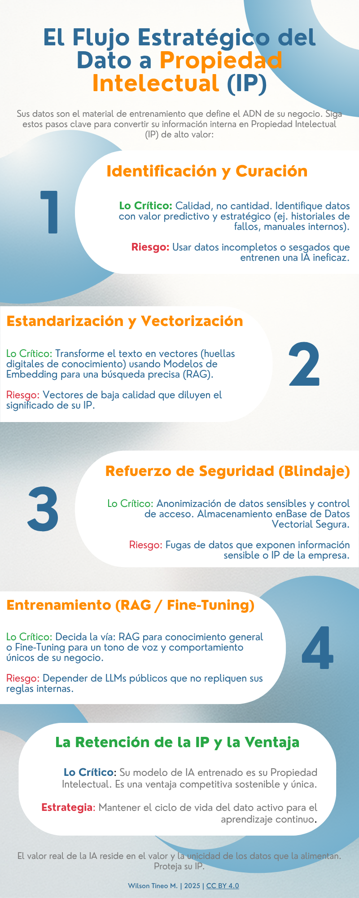

La Nueva IP: Transforme sus Datos de Negocio en Activos de IA.
En esta infografía exploramos el ciclo de vida estratégico de los datos. Aprenda a convertir la información interna de su negocio en la fuente de entrenamiento más valiosa para una IA que le otorgue una ventaja competitiva sostenible, protegiendo su Propiedad Intelectual (IP).
